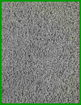
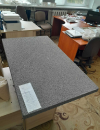
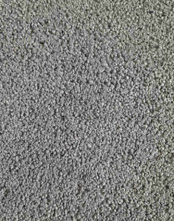

Термолат КМ
Плиты «Термолат КМ» — универсальный современный материал с уникальными свойствами, предназначенный для применения снаружи и внутри зданий при строительных, ремонтных и реставрационных работах, а также в архитектуре и дизайне интерьеров.
Плиты «Термолат КМ» обладают прочностью и долговечностью легких бетонов, легко обрабатываются, сочетаются с любыми видами отделки (окраска, штукатурка, облицовка керамической плиткой, обшивка деревом, металлом, пластиком и т.д.).
Основная область применения плит Термолат КМ
- Защитно-декоративная облицовка фасадов, балконов и лоджий жилых, промышленных и общественных зданий;
- Обрамление дверных и оконных проемов, отделка откосов;
- Настилы скатных и плоских кровель под черепицу, металлические, рулонные и напыляемые кровельные материалы;
- Элементы конструкций сборных домов и сэндвич-панелей;
- Элементы несъемной опалубки;
- Элементы каркасных перегородок при повышенных требованиях к огнестойкости, звуко- и шумоизоляции;
- Внутренние звукоизоляционные, влагостойкие, термостойкие и огнестойкие облицовки, в том числе в банях, в зонах печей и каминов, в местах проходов дымовых труб через перекрытия, и т.д.;
- Огнестойкие элементы шахт, вентиляционных коробов и т.д.;
- Настилы черновых полов;
- Внутреннее утепление и облицовка подвалов и подсобных помещений;
- Изготовление подоконников и других элементов дизайна интерьера.